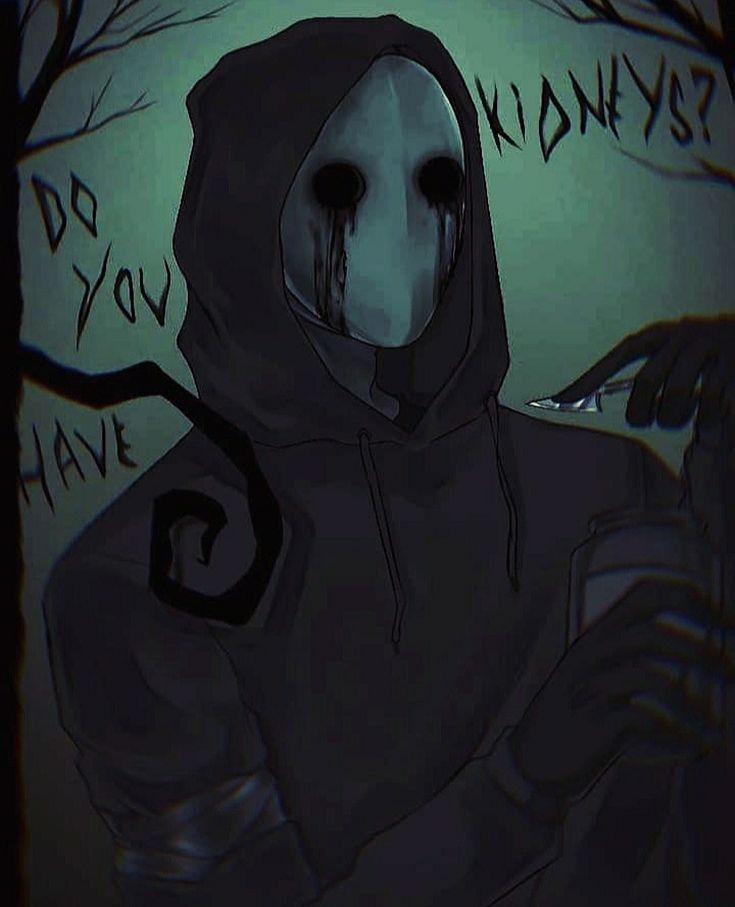
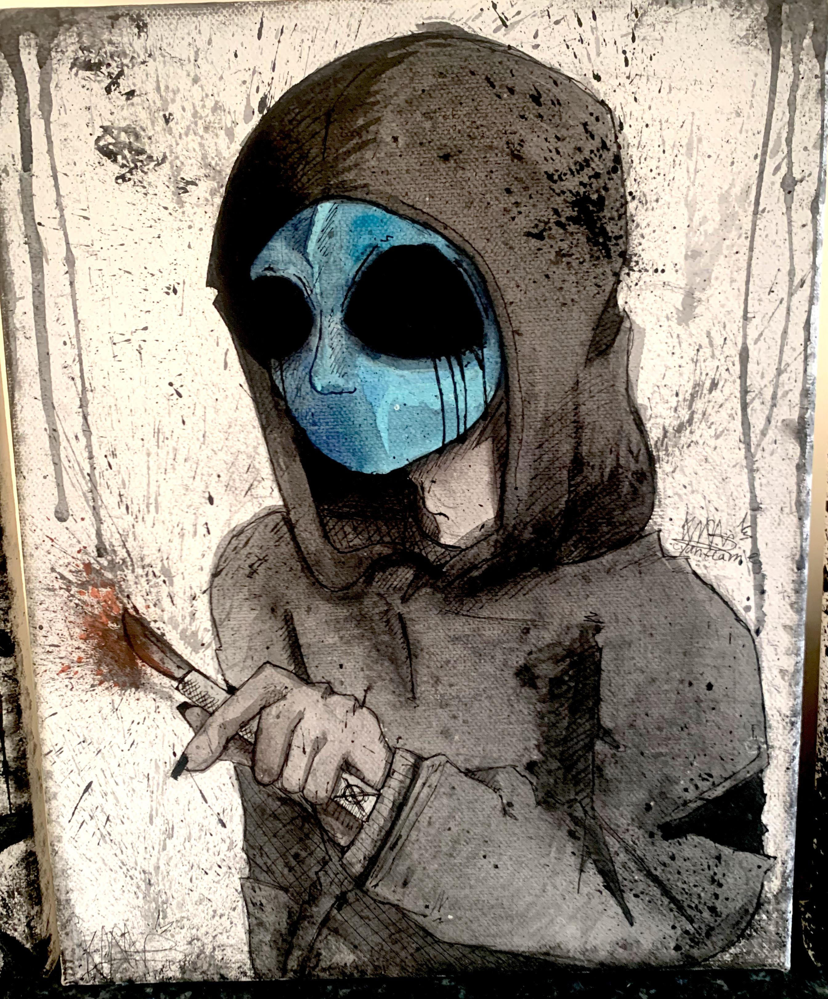

Eyeless Jack es una figura de la cultura de internet que se originó como una creepypasta, un tipo de historia de terror que se comparte en línea. La historia de Eyeless Jack describe a un ser misterioso y aterrador que se caracteriza por no tener ojos. Se dice que este ser aparece en la oscuridad y ataca a sus víctimas, a menudo robándoles los órganos internos.
La historia de Eyeless Jack ha ganado popularidad en la comunidad de creepypastas y ha sido adaptada en diversas formas, incluyendo fan art, videos y juegos. A pesar de su naturaleza ficticia, Eyeless Jack se ha convertido en un ícono del terror en línea y ha inspirado a muchos creadores de contenido a explorar su historia y características únicas.
Ver galeria
Eyeless Jack es conocido por su apariencia distintiva, que incluye una máscara negra sin ojos y un traje oscuro. Se dice que se mueve sigilosamente y ataca a sus víctimas durante la noche. La historia de Eyeless Jack ha sido objeto de muchas interpretaciones y teorías, y su origen exacto sigue siendo un misterio dentro de la comunidad de creepypastas.
A pesar de su naturaleza aterradora, Eyeless Jack ha ganado una base de fans leales que disfrutan de su historia y su estética única. La figura de Eyeless Jack ha sido utilizada en diversos medios, desde videojuegos hasta cómics, y sigue siendo una parte importante de la cultura de internet relacionada con el terror.
Se han reportado avistamientos sospechosos en tu área. ¡Ten cuidado durante la noche!